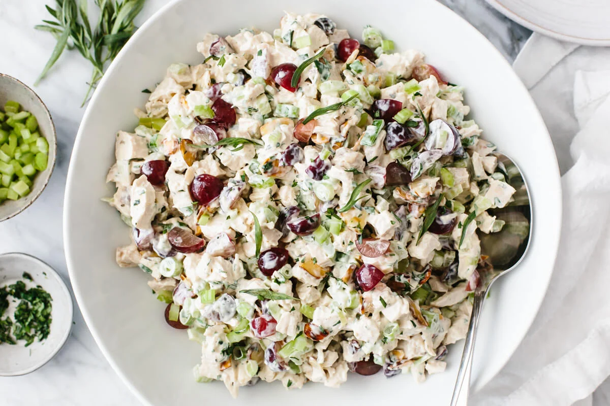

Chicken Salad

A very easy to make and delightful Chicken Salad!
Need something you can make really quickly and eat for days! Or serve a large party if your generous <.<. Look no further than this chicken salad recipe!
Ingredients
- Pre cooked deli oven roasted chicken.(feel free to get any cut of chicken and cook it yourself)
- Juice from one half of a lemon
- Half of a white onion
- Half cup of chopped green onion
- Two sticks,chopped, of celery
- Half cup of chopped grapes
- Half cup of cashews
- pinch of salt and pepper
Steps
- Shred your precooked chicken. Preferably get all of the breast & leg meat, then any other dark meat you want
- Add all ingredients to a large mixing boll and mix
Conclusion
Wow that was easy! We're already done! If your chicken was still warm when you mixed it in, be sure to cool in the fridge for at least an hour or it will be runny!